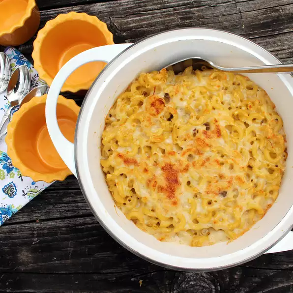

Macaroni Recipe

A delicious homemade macoroni recipe!
This recipe has been passed down for generations and enjoyed by many
throughout the years! You and your family will enjoy this macaroni for
years to come!
Ingredients:
- 1 (16 ounce) package elbow macaroni
- 1 tablespoon butter
- ⅓ cup milk
- 1 (10.75 ounce) can condensed cream of mushroom soup
- 1 pound processed cheese food, cubed
-
Bring a large pot of lightly salted water to a boil. Add pasta and cook
for 8 to 10 minutes or until al dente; drain. Preheat oven to 350
degrees F (175 degrees C).
-
In medium saucepan over medium heat, combine butter, milk, mushroom soup
and processed cheese. Stir until cheese is melted and mixture is smooth.
Stir in cooked pasta. Pour into 2 quart baking dish and bake 20 minutes
or until top is golden brown. Let stand 10 minutes and serve.